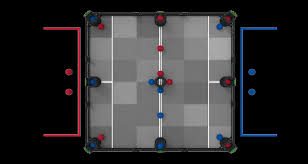

Pre-Season Stuff¶
https://www.roboticseducation.org/documents/2019/08/judge-guide.pdf/#page43
Example page -example of how all pages will be formatted and shows the user how to read the notebook
VEX VRC Change up game description¶

VEX Robotics Competition Change Up is played on a 12’x12’ square field configured as seen above. Two (2) Alliances – one (1) “red” and one (1) “blue” – composed of two (2) Teams each, compete in matches consisting of a fifteen (15) second Autonomous Period, followed by a one minute and forty-five second (1:45) Driver Controlled Period. The object of the game is to attain a higher score than the opposing Alliance by placing Balls in Goals, and Connecting Rows.
Game elements and objects -diagrams of the elements and objects, the sizes and weights, and maybe how they are used
Change up Feild overview -Just the 6x6 feild diagrams I do with the corresponding notes for each one (look in old notebooks if you don’t know what that is)
Ways to Score in Change Up¶
Objects + Auton |
Value |
|---|---|
1 Ball |
1PT |
1 Row |
6PT |
Auton Bonus |
6PT |
Auton WP |
1WP |
Every ball is worth one(1) point for their alliance. There is no bonus to owning one(1) goal but if you own three in a row you get an additional six(6) points. If during the autonomous phase you own all three goals in your home row you will get an 1 win point. Both teams can get this bonus and it does not effect the match’s score.
Change up competition match overview
Initial Thoughts on the Change Up challenge -whatever we think
Design brief
Team Intro¶
This year our team is composed of 5 people, Brody, Derek, Dylan, Ian, and Jack.
Brody – This is his third year doing VEX Robotics and his third year with us. He is the lead strategist is a drive team member and lead Scout.
Derek – This is his sixth year doing VEX Robotics and his third year with us. He is on the build team and the driver for our team.
Dylan – This is his fith year doing VEX Robotics and his second year with us. He is on the build team with Derek.
Ian – This is his sixth year doing VEX Robotics and his third year with us. He is the lead on our engineering notebook team and is part of the scouting team.
Jack – This is his sixth year doing VEX Robotics and his third year with us. He is the lead programmer and is on the drive team.
Subdivisions of our team¶
Drive Team – Brody, Derek, Jack
Scouting Team – Brody, Ian
Build Team – Derek, Dylan
Programming Team – Jack
Engineering Notebook Team – Ian, Brody, Derek, Dylan, Jack
Motor page?
Thoughts about the game (rough)
Auto very important Need to be able to descore Holding more than 5 balls in pointless (unless you are hoarding) Balls scored in the beginning of match will be descored Goals are not very tall Skills change is weird but important for high scoring skill runs it’s important to have quicker, high scoring matches this year, especially if we use a skills run that other teams can easily match in score
Thoughts about the game (refined)
Because of the advantages that autonomous gives you we need to spend a lot of time programming this season
Drive Base Design Matrix¶
Design |
Stability |
Traction |
Speed |
Resistance to pushing |
Strafing |
|---|---|---|---|---|---|
X drive |
1 |
1 |
3 |
1 |
Y |
Omni |
3 |
2 |
2 |
0 |
N |
Mecanum |
2 |
2 |
2 |
2 |
Y |
Omni + Traction |
3 |
3 |
2 |
3 |
N |
Locked Omni |
3 |
2 |
2 |
3 |
N |
Robot Designs Matrix¶
Design |
Ball Capacity |
Complexity |
Pros |
Cons |
|---|---|---|---|---|
Tray Bot |
3-6 |
3/5 |
High Capacity |
Can’t score and descore at the same time |
Snail |
3-4 |
4/5 |
Can score and descore at the same time |
Low Ball Capacity |
Tiny Boi |
2-3 |
0/5 |
Compact fast drive base |
Very Low Ball Capacity |
Mecanum is most equal drive base X-Drive is most manoeuvrable Omni isn’t resistant to pushing which can be a problem with this games defence Omni and traction is normally used when you need to save motors and we have more than enough motors most of the design we are prototyping
Initial Goals for Change Up¶
Short Term goals¶
Design a robot with CAD
The robot design must be able to score and de-score balls in goals
Research different designs that have worked in the past and adjust them to work with balls
Create pseudocode for future robot
Create Classes for the critical functions of the robot (drive base, arm, Intakes)
Begin strategizing 15 sec autons
Begin strategizing skills auton
Long Term Goals¶
Win multiple worlds qualifying awards at the south carolina state competition
Win the majority of excellence, skills, and tournament champions awards at competitions we attend
Do well in qualifications to choose a strong teammate in finals
Do well in skills to be eligible for excellence
Have a high scoring auton that gets the home row and beats the majority of teams inside of South Carolina
Design Brainstorming
Problem Statement; The challenge of Change Up is to score balls in goals, and connect rows of owned goals to gain more points than the opposing alliance at the end of the match.
Design Statement; Design, build, test, and compete with a robot capable of efficiently scoring and de-scoring balls in Vex Robotics Competition, Change Up
Design Constraints; The robot must not exceed 18’’ by 18” by 18” before the start of a match There is a limit of eight (8) V5 motors per robot No custom parts are allowed on the robot
Robot Criteria; Must be capable of scoring balls inside of the goals Must be capable of de-scoring balls from the bottom of goals
Robot Components (ideas); Drive base resistant to pushing with strafing capabilities Fast intakes to easily collect balls off the ground, and to easily de-score ball from goals Lift design, a tray that can hold at least 6 balls and elevate the tray to at least 18.3” (the height of the goals)